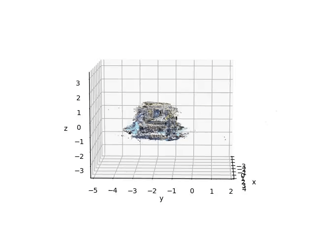
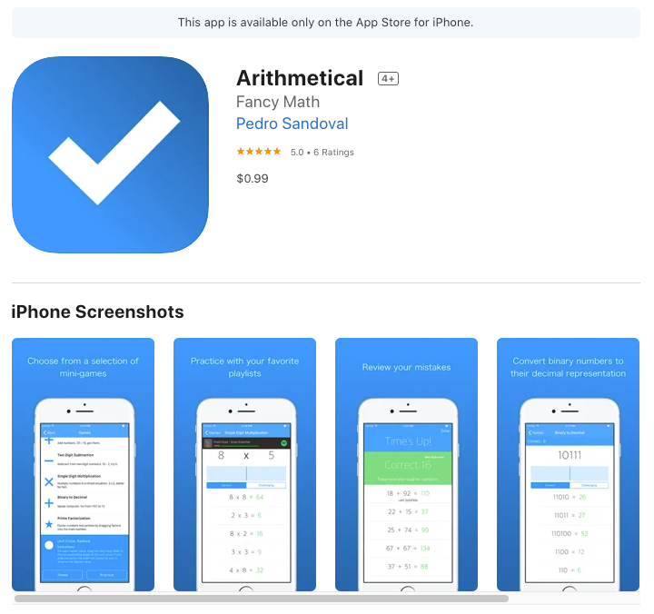

Pedro Sandoval-Segura
GitHub / Medium / LinkedIn / UMD / Google Scholar / Semantic Scholar / CV
Hello!
I am currently a PhD student in the Department of Computer Science at the University of Maryland at College Park, where I am advised by Prof. David Jacobs and Prof. Tom Goldstein. In May 2019, I earned my bachelor's degree in Computer Science and Mathematics from Harvey Mudd College. In May 2021, I received my master's degree in Computer Science from the University of Maryland. I am broadly interested in computer vision and deep learning research. Lately, my research focuses on adversarial examples and the benefits of adversarial training.
I am fortunate to have been selected as an Amazon Lab126 Diversity in AI Fellow for the 2021-2023 academic years.
In my free time, I enjoy running, building physical computing projects, and developing apps for iOS.
Publications
Sandoval-Segura, Singla, Geiping, Goldblum, Goldstein, Jacobs. "Autoregressive Perturbations for Data Poisoning". Advances in Neural Information Processing Systems 36 (NeurIPS), 2022. [arXiv:2206.03693]
Sandoval-Segura, Singla, Fowl, Geiping, Goldblum, Jacobs, Goldstein. "Poisons that are learned faster are more effective". In Proceedings of the IEEE/CVF Conference on Computer Vision and Pattern Recognition (CVPR) Workshops, 2022. [CVF Open Access]
Bashir, Montañez, Sehra, Sandoval-Segura, Lauw. "An Information-Theoretic Perspective on Overfitting and Underfitting". In Australasian Joint Conference on Artificial Intelligence (AJCAI), 2020. [arXiv:2010.06076]
Sandoval-Segura, Lauw, Bashir, Shah, Sehra, Macias, Montañez. "The Labeling Distribution Matrix (LDM): A Tool for Estimating Machine Learning Algorithm Capacity". 12th International Conference on Agents and Artificial Intelligence (ICAART 2020), 2020. [arXiv:1912.10597]
Drissi, Sandoval, Ojha, Medero. "Harvey Mudd College at SemEval-2019 Task 4: The Clint-Buchanan Hyperpartisan News Detector". In Proceedings of The 13th International Workshop on Semantic Evaluation (SemEval), 2019. [arXiv:1905.01962]
Drissi, Watkins, Khant, Ojha, Sandoval, Segev, Weiner, Keller. “Programming Language Translation using a Grammar-Driven Tree-to-Tree Model”. ICML Workshop on Neural Abstract Machines and Program Induction v2 (NAMPI), 2018. [arXiv:1807.01784]
Other Writing
My Master's paper: "Adversarially Robust Segmentation Models Learn Perceptually-aligned Gradients" [arXiv:2204.01099]
A project from summer 2021: "AutoProtoNet: Interpretability for Prototypical Networks" [arXiv:2204.00929]
How to Train a Neural Network Classifier on ImageNet using Tensorflow 2
A summary about an error in the proof of Lemma 1 of Monte-Carlo Planning in Large POMDPs.
Teaching
CMSC 421: Introduction to Artificial Intelligence (Spring 2021), Graduate Teaching Assistant, University of Maryland at College Park
CMSC 421: Introduction to Artificial Intelligence (Fall 2020), Graduate Teaching Assistant, University of Maryland at College Park
CMSC 436: Programming Handheld Systems (Fall 2019), Graduate Teaching Assistant, University of Maryland at College Park
CS 81: Computability and Logic (Spring 2019), Grader and Tutor, Harvey Mudd College
MATH 187: Operations Research (Spring 2019), Grader, Harvey Mudd College
Past Projects
An implementation of the GD-UAP algorithm in PyTorch. This code can be used to generate UAPs which can fool a variety of image classifiers with high accuracy.
I developed experimental software to turn AR-enabled iPhones into 3D-scanners. Here's a point cloud of a full-size pickup truck captured with my iPhone 7:
TapTunes: an iOS app which brings album dashboards to augmented reality. The project won 2nd Place in the Advanced category of the 5C Hackathon in 2017. Here's what a Spotify playlist album tower looks like on top of my college desk:

Arithmetical: a mix of math games for iOS where users race against a timer to keep Spotify music playing. The app accumulated over 3000 downloads. Due to yearly Apple Developer membership fees, the app is no longer available through the App Store, but it can still be found on GitHub.
I recently wired and wrote software for a 32x32 LED matrix that accurately displays time, local weather, and a recent news headline. It uses an Arduino Mega outfitted with an ethernet shield and is installed in my home:

Contact
psando AT cs DOT umd DOT edu